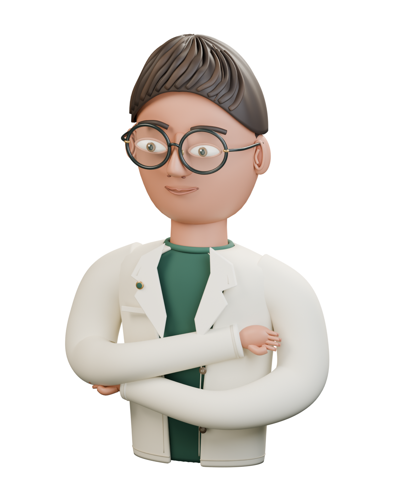

保持好奇，持续创造 PORTFOLIO / 2026
让想象，
有形可见。
你好，我是林间。一名在设计与代码之间探索的创作者，把好奇心变成可以触摸的数字体验。
中国 · 广州用心制作，连接世界
FIG. 01A DIGITAL ME

正在唤醒另一个我
world!
LIN JIANIN 3D
原创示例角色 · 等待你的肖像
以设计思考THINK IN DESIGN
用代码表达BUILD WITH CODE
让体验发生MAKE IT FEEL
01 / SELECTED WORK
一些想法，落地成真。
从城市记忆到微观机械，
让屏幕成为探索的入口。三个项目，三种看世界的方式 ↙
交互设计 / 创意开发 / 三维视觉点击项目，进入完整体验
02 / A LITTLE ABOUT ME
理性构建，
感性表达。
设计师 / 创意开发者
我喜欢那些跨越边界的创作：
设计让技术有温度，代码让想象有形状。
这里是一个开放的数字工作室。你可以转动我的数字分身，走进每一件作品，也可以沿着地球上的坐标，发现想法相遇的地方。
打开示例角色的创作源文件03 / IDEAS WITHOUT BORDERS
让想法，走远一点。
屏幕之外，面对面分享。
每一次交流，都是新的坐标。演讲路线 · 示例数据
CONNECTING THE DOTS
拖动地球探索 · 点击坐标定位23.13° N / 113.26° E
分享与相遇 06